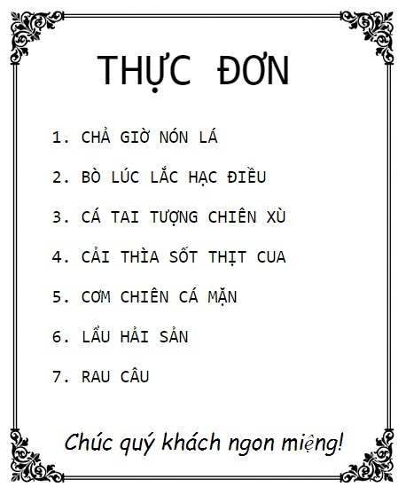

Cách tạo một cái danh sách trong HTML
|  |
- Tính đến thời điểm này thì chắc khái niệm danh sách không còn là một thứ gì xa lạ đối với các bạn nữa, chúng ta thường gặp nó trong cuộc sống hàng ngày, điển hình như tập hợp tên của tất cả các món ăn được liệt kê bên trong thực đơn chính là một cái danh sách. - Danh sách là một tập hợp gồm nhiều danh mục, phía trước mỗi danh mục sẽ có một cái chỉ mục để đánh dấu thứ tự cho danh mục. - Ví dụ: Cái danh sách nằm bên trái có tổng cộng bảy danh mục, phía trước các danh mục sẽ có chỉ mục lần lượt là 1, 2, 3, 4, 5, 6, 7 |
1) Phân loại danh sách
- Trong ngôn ngữ HTML, danh sách được chia ra làm hai loại cơ bản:
Danh sách có thứ tự |
- DANH SÁCH CÓ THỨ TỰ là loại danh sách mà chỉ mục của các danh mục có sự phân biệt rõ ràng, mặc định được sắp xếp theo thứ tự tăng dần dựa theo kiểu chỉ mục. -Ví dụ, cả ba cái danh sách bên dưới đều thuộc loại có thứ tự.
|
Danh sách không có thứ tự |
- DANH SÁCH KHÔNG CÓ THỨ TỰ là loại danh sách mà chỉ mục của tất cả các danh mục đều có chung một kiểu. - Ví dụ, cả ba danh sách bên dưới đều thuộc loại không có thứ tự:
|
2) Cách tạo danh sách có thứ tự
- Để tạo một cái danh sách có thứ tự thì chúng ta sử dụng cú pháp như sau:
- Dưới đây là danh sách một số thuộc tính thường được sử dụng bên trong thẻ <ol>
(các bạn vui lòng tấm vào hình để tìm hiểu chi tiết chức năng và cách sử dụng của từng thuộc tính)
| type |
- Tùy chỉnh kiểu chỉ mục của các danh mục. .ttt-type |
| reversed |
- Đảo ngược thứ tự chỉ mục của các danh mục. |
| start |
- Xác định thứ tự bắt đầu của chỉ mục đầu tiên. |
3) Cách tạo danh sách không có thứ tự
- Để tạo một cái danh sách không có thứ tự thì chúng ta sử dụng cú pháp như sau:
- Lưu ý: Khi chúng ta tạo một cái danh sách không có thứ tự thì chỉ mục của các danh mục bên trong danh sách sẽ có kiểu mặc định là dấu chấm tròn màu đen. Nếu muốn thiết lập lại kiểu chỉ mục cho các danh mục thì chúng ta cần phải sử dụng thuộc tính type.
- Dưới đây là những giá trị có thể áp dụng cho thuộc tính type:
| disc | - Chỉ mục sẽ có kiểu là một dấu chấm tròn màu đen (mặc định) |
Xem ví dụ |
| circle | - Chỉ mục sẽ có kiểu là một dấu chấm tròn màu trắng viền đen. |
|
| square | - Chỉ mục sẽ có kiểu là một ô vuông màu đen. |
|
| none | - Không hiển thị chỉ mục. |
4) Danh sách hai cấp
- Thật ra thì danh sách hai cấp là một dạng mở rộng của danh sách thông thường, danh mục bên trong danh sách có thể là một cái danh sách khác.
- Danh sách bên dưới chính là một cái danh sách hai cấp, nhìn kỹ thì các bạn sẽ thấy danh mục thứ ba chính là một cái danh sách (danh sách này gồm có hai danh mục: Ajax, jQuery)
- HTML
- CSS
- Ajax
- jQuery
- PHP & MySQL
- Để tạo một cái danh sách hai cấp thì chúng ta chỉ cần chèn đoạn mã của cái danh sách cấp hai nằm tại vị trí danh mục của cái danh sách cấp một là được.
<ul>
<li>HTML</li>
<li>CSS</li>
<ul>
<li>Ajax</li>
<li>jQuery</li>
</ul>
<li>PHP & MySQL</li>
</ul>
- Lưu ý: Với cùng quy tắc này thì chúng ta cũng có thể tạo ra danh sách ba cấp, bốn cấp, . . . .
<ul>
<li>CHƯƠNG 1</li>
<ul>
<li>BÀI SỐ 1</li>
<ul>
<li>Câu hỏi 1</li>
<li>Câu hỏi 2</li>
</ul>
<li>BÀI SỐ 2</li>
<ul>
<li>Đáp án 1</li>
<li>Đáp án 2</li>
</ul>
</ul>
<li>CHƯƠNG 2</li>
<ul>
<li>BÀI SỐ 1</li>
<li>BÀI SỐ 2</li>
</ul>
</ul>

- Thông thường, khi chúng ta tạo một cái danh sách có thứ tự thì chỉ mục của các danh mục bên trong danh sách sẽ có kiểu mặc định là các số nguyên (1, 2, 3, . . . .)
- Tuy nhiên, với việc sử dụng thuộc tính type thì chúng ta có tùy chỉnh kiểu chỉ mục cho các danh mục.
- Cú pháp:
- Trong đó, value có thể được xác định dựa theo một trong các giá trị như sau:
| 1 | - Chỉ mục sẽ có kiểu là các số nguyên (1, 2, 3, . . .) |
Xem ví dụ |
| a | - Chỉ mục sẽ có kiểu là các chữ cái viết thường (a, b, c, . . .) |
|
| A | - Chỉ mục sẽ có kiểu là các chữ cái viết hoa (A, B, C, . . .) |
|
| i | - Chỉ mục sẽ có kiểu là các số la mã viết thường (i, ii, iii, . . .) |
|
| I | - Chỉ mục sẽ có kiểu là các số la mã viết hoa (I, II, III, . . .) |